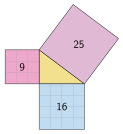

Teorema de Pitágoras
En un triángulo rectángulo el lado opuesto al ángulo recto es la hipotenusa y los otros dos lados son los catetos. La hipotenusa es siempre el lado más largo.
La interpretación geométrica es que el área del cuadrado construido sobre la hipotenusa es igual a la suma de las áreas de los cuadrados construidos sobre los catetos. En el dibujo, \(25=9+16\).

El teorema también sirve para saber si un triángulo es rectángulo: si los lados cumplen \(a^2=b^2+c^2\), el triángulo es rectángulo. Si \(a^2>b^2+c^2\) es obtusángulo, y si \(a^2<b^2+c^2\), acutángulo.
Calcula el lado que falta en cada triángulo rectángulo:
- Catetos 5 y 12 cm.
- Hipotenusa 15 cm y cateto 9 cm.
- Catetos iguales de 7 cm.
Una televisión mide 80 cm de ancho y 45 cm de alto. ¿Cuánto mide su diagonal? Exprésala también en pulgadas (1 pulgada son 2,54 cm).